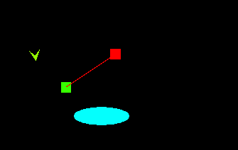
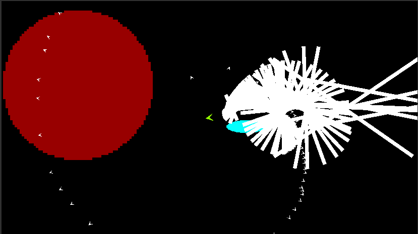

Screenshot in the unity editor
In my game the main game play is about hunting down space whales. So that is what I will implement first. In the past (on the seas not in space) those poor sailors had to face sperm whales and other dangerous sea creatures manned with a hand trown harpune. The space age got an upgrade. The space whalers will be able to fire the harpune safely from a harpune canon mounted in fornt of their spaceship.
The Tip of the harpune is easy. Here the Code:
public class HarpuneCanon : MonoBehaviour
{
public GameObject harpune; //Prefab for the Harpune tip
// Update is called once per frame
void Update()
{
if (Input.GetButtonDown("Fire1"))
{
GameObject go = Instantiate(harpune);
go.transform.SetPositionAndRotation(transform.position, transform.rotation);
go.GetComponent().Fire(transform);
}
}
} Part of the Harpune class
// Update is called once per frame
void FixedUpdate()
{
if (fired)
{
if (!stopped)
{
speedScaledVec.x = speed * Time.fixedDeltaTime;
speedScaledVec.y = speed * Time.fixedDeltaTime;
transform.position = transform.position + Vector3.Scale(direction, speedScaledVec);
}
}
}
public void Fire(Transform player, PlayerMovement playerMovement)
{
/* lineInstance = Instantiate(linePrefab.gameObject).GetComponent(); --> ignore for now! */
// get current facing-diretion of the player --> harpune shall move further in to that direction
float zAnglePlayer = (player.localRotation.eulerAngles.z -180) / 57.2958f; // /57.2958f => basically degree to rad
direction.x = Mathf.Cos(zAnglePlayer);
direction.y = Mathf.Sin(zAnglePlayer);
// end of facing direction
//rotate harpune tip
transform.rotation = player.rotation;
fired = true;
this.player = player;
/* lineInstance.DrawLine(transform.position, player.position, 2, Color.white); --> ignore for now */
}
This was the harder part (due to some confusion on my side...). To break it down I made this test setup. To Gameobjects which I want to connect with a line the math behind that should be simple, we take a look at the result and code:

The Line class
public class Line : MonoBehaviour
{
public SpriteRenderer lineRenderer;
public float defaultStrenght = 0.05f;
private Vector2 startPoint;
private Vector3 endPoint;
private float strenght;
private float lenght;
public void DrawLine(Vector2 startPoint, Vector2 endPoint, float strenght, Color color)
{
this.strenght = strenght;
SetColor(color);
UpdateLine(startPoint, endPoint);
}
public void UpdateLine(Vector2 startPoint, Vector2 endPoint)
{
//lenght
lenght = Mathf.Abs(Vector2.Distance(startPoint, endPoint));
lineRenderer.gameObject.transform.localScale = new Vector2(lenght, strenght * defaultStrenght); //you need the local scale here!
//position
lineRenderer.gameObject.transform.SetPositionAndRotation(new Vector2( //this is basicaly all the "magic"
startPoint.x + (endPoint.x - startPoint.x) / 2,
startPoint.y + (endPoint.y - startPoint.y) / 2),
transform.rotation);
//rotation
float alpha = Mathf.Atan2(endPoint.y - startPoint.y, endPoint.x - startPoint.x) * 57.2958f; // * 57.2958f -> rad to degrees (basically 180/pi)
transform.eulerAngles = new Vector3(0, 0, alpha);
}
[...]
}
I also had to make sure to implement the Line-Prefab was setup corectly. It was important, that if I set the lenght of 1 in the class "Line" the coresponding SpriteRenderer2D would also have the size 1, so my calculated size and the actual displayed image would match. You can achieve this by enter in the "pixel per unit" field of the texture you use (in my case "baseImage") exactly the image size (I had a 64px x 64px png, so I entered 64 in that field). The Picture bellow shows my Line-Prefab.
On first try it never goes well, would be boring if it would right??? But some minutes later I had a working prototype
Watch a short demo of the working harpunes firing away